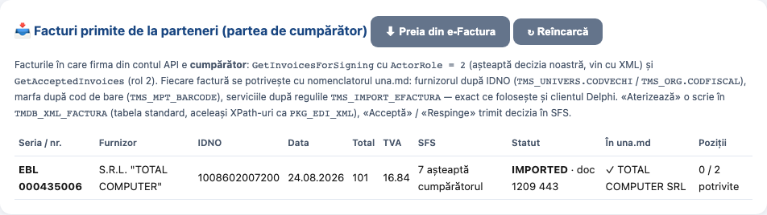
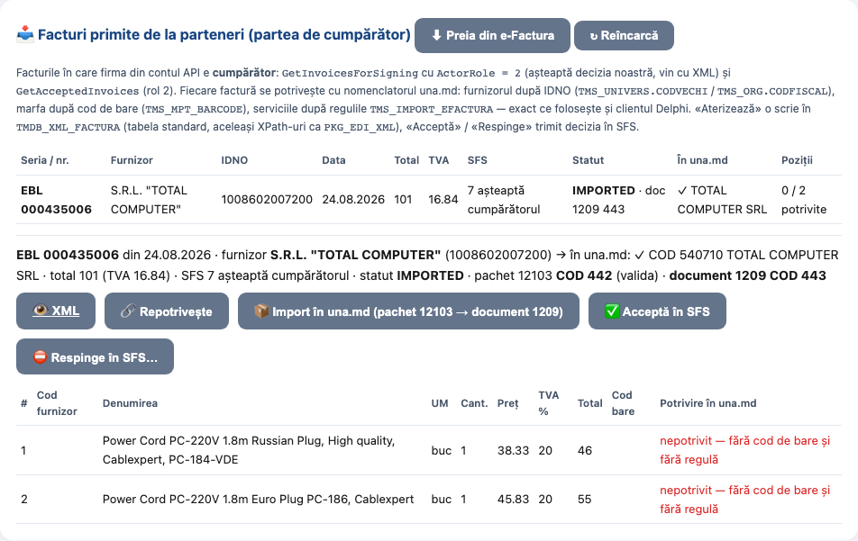
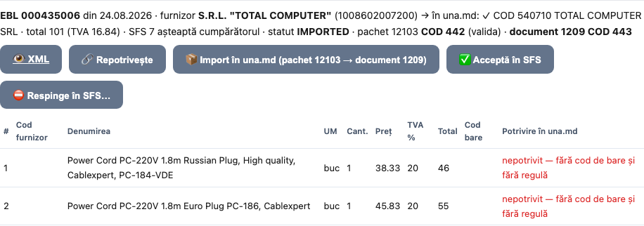
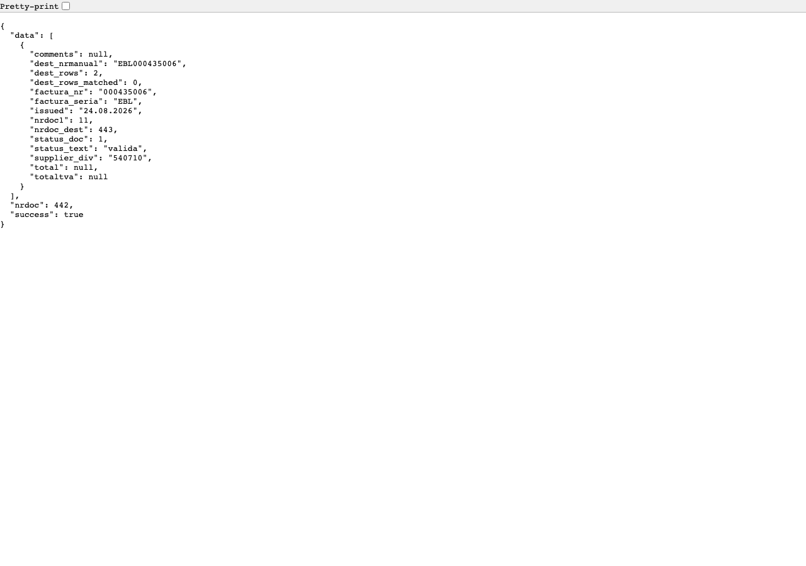
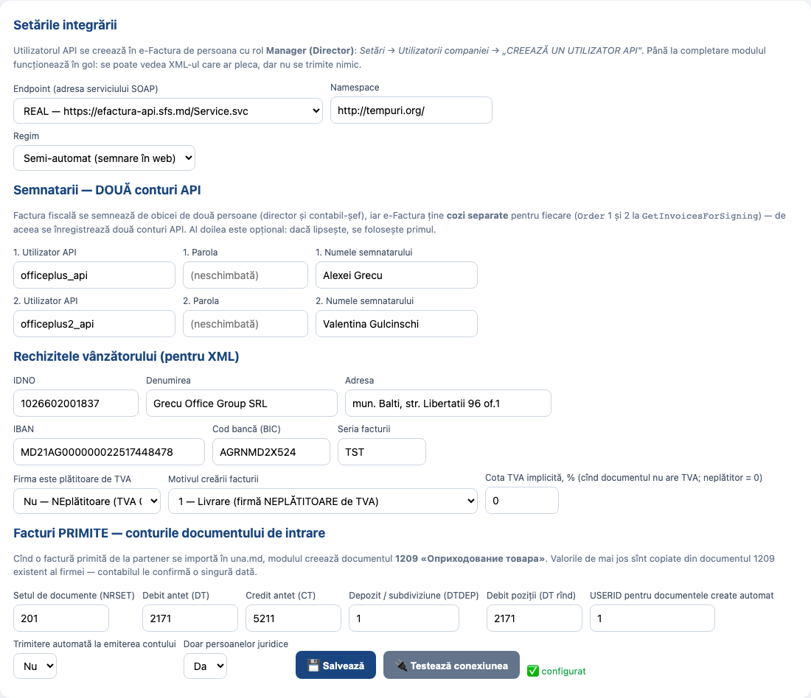
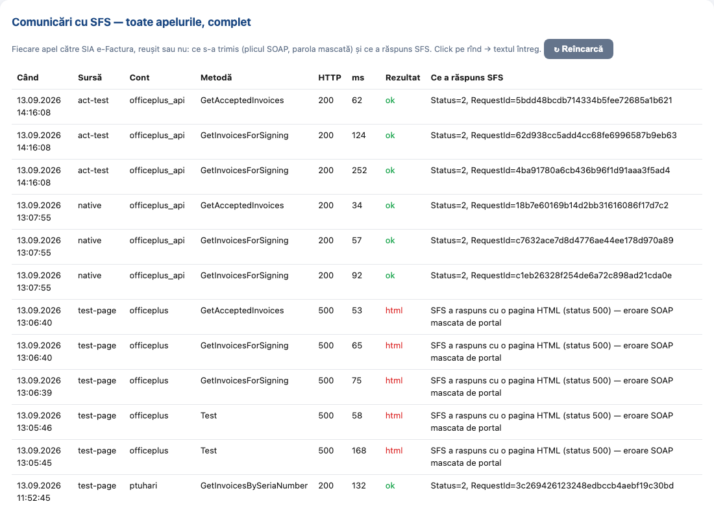

Act de testare — e-Factura, facturi primite de la parteneri
Data: 13.09.2026 · Executant: agentul (Claude), pe cerința proprietarului «тестируй всё сам» ·
Instrucțiunea aplicată: EFACTURA_INSTRUCTIUNE_TESTARE.html ·
Ramura feat/efactura, worktree Artgranit-efactura.
1. Mediul și contul
| Element | Folosit în test |
|---|---|
| Contul SFS | real: officeplus_api, endpoint https://efactura-api.sfs.md/Service.svc (din EFA_SETTING al OfficePlus; nu s-a tastat nicio parolă în browser — apelurile s-au făcut din cod cu contul salvat) |
| Firma cumpărător | S.R.L. «GRECU OFFICE GROUP», IDNO 1026602001837 (neplătitor de TVA) |
| Baza | OFFICEPLUS de producție, cloudbd (orange.una.md) — aceeași pentru officeplus.md și nufarul.eminescu.md |
| Cod | commit-urile din 13.09.2026 pe feat/efactura, desfășurate pe nufarul (92.5.3.187) și office (192.168.0.250 → officeplus.md) |
| Web | pagina de test rulată din worktree pe 127.0.0.1:3010 cu sesiune de operator (pentru capturi) și prin clientul de test Flask; serverele vii verificate prin coduri HTTP |
2. Rezultatele pe pași
| # | Pas (din instrucțiune) | Rezultat obținut | Verdict |
|---|---|---|---|
| 0 | Pregătire: setări, formular nativ | setările in_nrset 201 / in_dt 2171 / in_ct 5211 / in_dtdep 1 / in_dt_row 2171 / in_userid 1, vat_payer 0, creation_motiv 1; formularul 12103 creat în A$ADM (OBJ_ID 11530 sub «Intrări», 5 acțiuni); TMS_SYSS tip XM completat (23 rînduri) după modelul FPROIECT | OK |
| 2 | «Preia din e-Factura» (contul real, rol cumpărător) | GetInvoicesForSigning ActorRole 2 (Order 1 și 2) + GetAcceptedInvoices: found 1, added 0, updated 1, errors [] — factura EBL 000435006 din 24.08.2026, furnizor S.R.L. «TOTAL COMPUTER» (1008602007200), total 101,00 lei, TVA 16,84, InvoiceStatus 7 (așteaptă decizia cumpărătorului), 2 poziții. Repetarea preluării nu a dublat rîndul (updated, nu added) | OK |
| 2 | Lista (GET …/test/inbox?env=prod) | 200; rîndul cu seria/nr, furnizor, IDNO, data, total, TVA, SFS 7, statut, «În una.md», poziții 0/2 — vezi captura 1 | OK |
| 3 | Detaliul (GET …/test/inbox/21) | 200; cumpărătorul «S.R.L. "GRECU OFFICE GROUP"», 2 poziții: «Power Cord PC-220V 1.8m Russian Plug…» 1 buc 38,33 + TVA 7,67 = 46,00; «Power Cord PC-220V 1.8m Euro Plug PC-186» 1 buc 45,83 + 9,17 = 55,00; ambele nepotrivite (fără cod de bare, fără regulă) — vezi capturile 2–3 | OK |
| 4 | XML | 200 application/xml, 2125 octeți, <Document><SupplierInfo>… fără semnătură | OK |
| 5 | «Repotrivește» (POST …/21/match) | {"rows":{"barcode":0,"none":2,"rule":0},"supplier_cod":540710} — furnizorul găsit după IDNO după pasul 6, marfa nepotrivită (corect: nu există în nomenclator) | OK |
| 6 | Furnizorul lipsă → puntea Contragenti | înainte: «furnizorul (IDNO) nu există în nomenclator» (statut 7 în pachet). CtgController.upsert → created: COD 540710 «TOTAL COMPUTER SRL», CODVECHI/CODFISCAL 1008602007200, GR1 E, adresa «MUN.BALTI ?tefan cel Mare nr.73» (Ș pierdut la CL8MSWIN1251 — vezi observația O2) | OK |
| 7 | Import în una.md (pachet 12103 → 1209) | pachet 442 (OLE EFACTURA_API_20260913_141759.xml) → pkg_edi_xml.import_xml_package_object: STATUS_DOC 1 valida → EFA_INBOX.create_docs_1209 → document 1209 nr. 443; EFA_IN 21 → IMPORTED, DEST_NRDOC 443, ERR_MSG gol | OK |
| 8 | Verificarea documentului 1209 nr. 443 în bază | TMDB_DOCS: TIP P, SYSFID 1209, NRSET 201, NRMANUAL EBL000435006, data 24.08.2026, LEI, USERID 1.VMDB_ST201M: DT 2171 / CT 5211, DTDEP 1 «Magazin 1», CTDEP 540710 «TOTAL COMPUTER SRL, 1008602007200», DTDATA 24.08.2026.VMDB01M_VINZ: PRTVA_SERIA EBL, PRTVA_NR 000435006.VMDB_ST201D: rînd 1 — 1 buc, PRET 46, SUMA 46,00, fără TVA 38,33, TVA 7,67; rînd 2 — 1 buc, 55,00 / 45,83 / 9,17; DTSC gol la ambele (marfa nu e în nomenclator — se alege manual, ca în Delphi) | OK |
| 9 | Idempotență | a doua preluare: updated 1, fără dublare; re-importul aceluiași pachet șterge pozițiile fără document și le reface (NRDOC1 8 → 11), documentul 1209 creat o singură dată | OK |
| 10 | Decizia în SFS (Acceptă / Respinge) | neexecutat intenționat: e o acțiune ireversibilă către SFS și furnizor pe contul real; o face contabilul. Mecanismul a fost verificat pe mediul de probă (EAA 002514972: PostAcceptedInvoices → Status 2, apoi InvoiceStatus 3) | SĂRIT (decizia contabilului) |
| N1 | Lanțul nativ: Oracle → API → SFS | SELECT EFA_INBOX.fetch_api(442) FROM dual pe baza de producție → HTTP 200: {"success":true,"nrdoc":442,"found":1,"imported":1,"summary":"facturi noi: 1; valide: 0; cu probleme: EBL000435006: furnizorul (IDNO) nu exista in nomenclator"} — serverul a adus factura reală din SFS în pachet; după pasul 6 importul a devenit valid | OK |
| — | Securitate | toate rutele /test/inbox… fără sesiune → 401; API nativ fără cheie → 401 (verificat pe officeplus.md); documentele modulului (/efactura/docs/…) fără sesiune → 302 /login, traversare de cale → 404 | OK |
| — | Teste unitare, instalator | tests/test_efactura.py: 68 passed; efactura_deploy.py: 0 FAIL, EFA_INBOX VALID | OK |
| — | Desfășurare | nufarul și office: /login 200, 0 Traceback în jurnal; https://nufarul.eminescu.md/login 200; https://officeplus.md/cos 200 | OK |
3. Capturi
1. Lista facturilor primite (contul real, mediul real)

2. Detaliul EBL 000435006 — furnizorul în una.md, pachetul 442, documentul 1209 nr. 443

3. Pozițiile și potrivirea

4. Pachetul 442 (
GET …/test/inbox/package/442)
5. Administrare — contul real și setările contabile

6. Jurnalul comunicărilor cu SFS (cerere + răspuns, inclusiv cele reușite)

4. Defecte găsite în timpul testării și rezolvate în aceeași zi
| # | Defect | Cauza | Rezolvare (commit pe feat/efactura) |
|---|---|---|---|
| D1 | ORA-20101 … inafara perioadei de lucru (-) la crearea oricărui document | TRIG_BFALL_TMDB_DOCS cere perioada de lucru din TPARAMS, goală în sesiunile de sistem | EFA_INBOX.sys_guard: ocolirea prevăzută de trigger (envun4.dont_fire_trigger) pe tot blocul de creare, ridicată la ieșire și la excepție |
| D2 | USERID gol pe documentele create | triggerele înlocuiesc USERID cu param_userid din context | sys_guard pune param_userid = in_userid |
| D3 | ORA-01403 în PKG_EDI_XML linia 3629 | lipsea TMS_SYSS tip XM cod 1/6 (intervalul de zile) | 07_efa_syss_seed.sql (MERGE, 364 zile ca FPROIECT) |
| D4 | statut 8 «subdiviziunea cumpărătorului» | vendorul cere UnloadingPointCode, SFS nu-l trimite | injectat din in_dtdep la ambalarea pachetului |
| D5 | pozițiile pachetului se dublau la re-import | vendorul doar adaugă | ștergerea pozițiilor fără NRDOC_DEST înainte de import |
| D6 | RROWID începea de la 7 | numărătoare pe tot pachetul | ROW_NUMBER() per document |
| D7 | ERR_MSG vechi rămînea după succes | — | șters cînd DEST_NRDOC e completat |
5. Observații (nerezolvate, pentru decizie)
| # | Observație | Propunere |
|---|---|---|
| O1 | Marfa din facturile primite nu are cod de bare și nu are reguli în TMS_IMPORT_EFACTURA → DTSC rămîne gol, se alege manual | contabilul definește reguli (LIKE pe denumire → card) pentru mărfurile/serviciile care se repetă; sau furnizorii pun BarCode |
| O2 | Diacriticele din adresa furnizorului («Ștefan» → «?tefan») se pierd în XML-ul salvat în EFA_IN.XML (baza e CL8MSWIN1251) | la salvare transliterare ca la Contragenti (to_db_charset); nu afectează sumele sau potrivirea |
| O3 | Documente rămase în baza de producție după test: 12103 nr. 438 (gol), 439 (proba de pe preprod EAA 002514972), 442 (pachetul real); 1209 nr. 441 (proba preprod, datat 11.06.2020) și 443 (factura reală EBL 000435006) | 441 și 438/439 — de șters (date de probă); 442/443 — documente reale ale firmei, contabilul decide dacă rămîn |
| O4 | Factura EBL 000435006 e încă în coada SFS (statut 7) — firma nu a acceptat-o | contabilul apasă «Acceptă în SFS» (sau în cabinetul sfs.md) |
Concluzie: fluxul de primire a facturilor pe contul real OfficePlus funcționează cap-coadă (SFS → una.md → document 1209),
identic cu celelalte baze cloudbd. Singurul pas neexecutat e decizia (acceptare/respingere) în SFS — rezervat contabilului.
6. Adrese live
- https://officeplus.md/UNA.md/orasldev/efactura/test · nufarul
- https://officeplus.md/UNA.md/orasldev/efactura/admin · jurnalul SFS
- acest act: officeplus.md · nufarul
- instrucțiunea: officeplus.md · nufarul